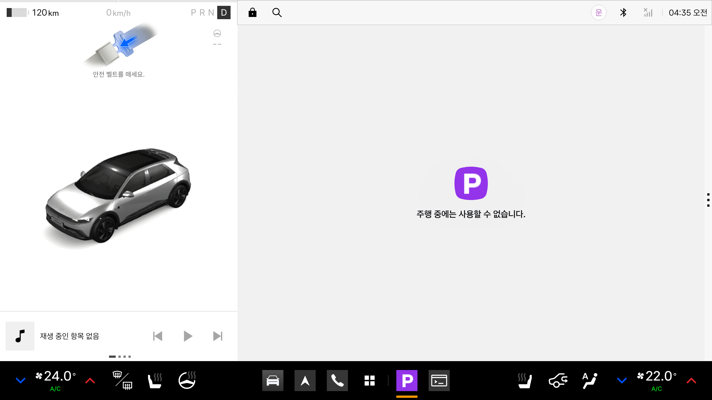
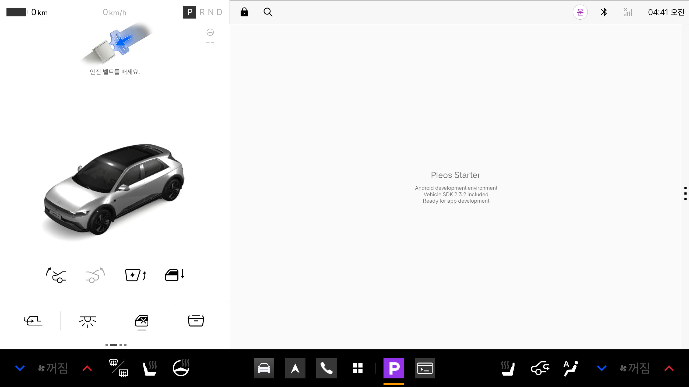
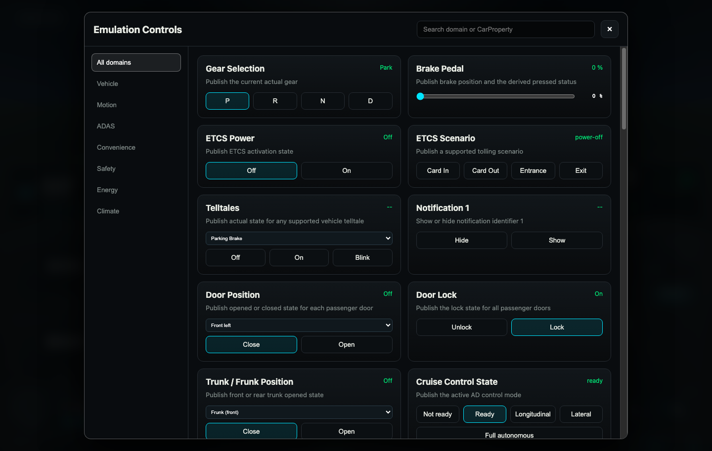
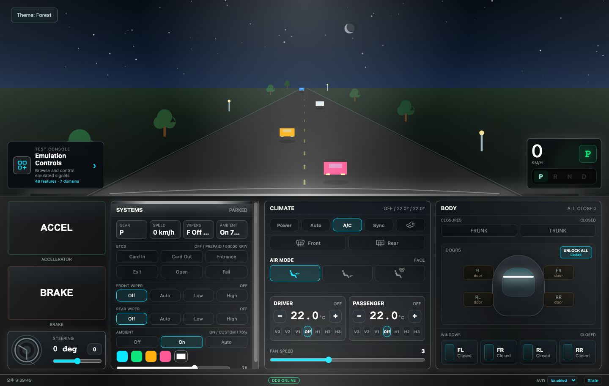
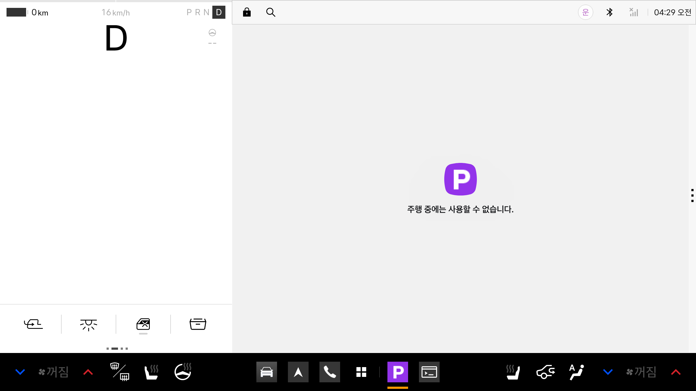
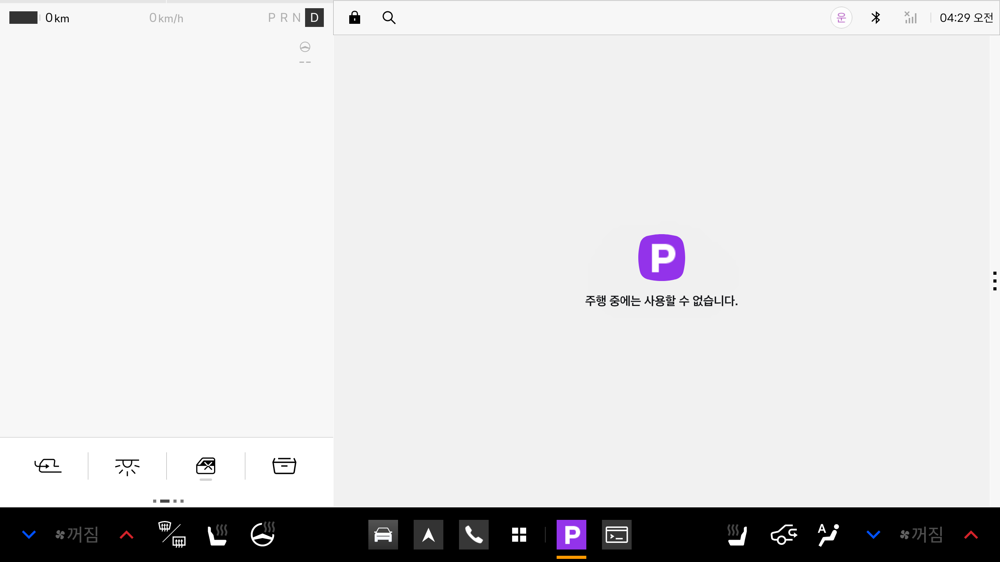
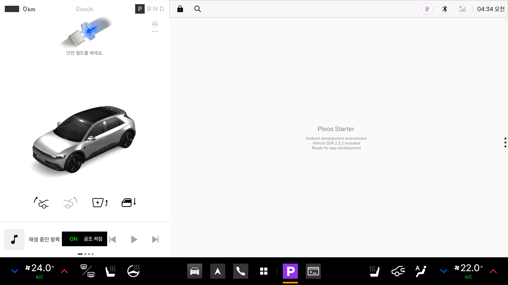
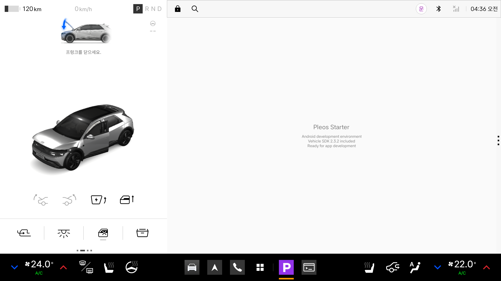
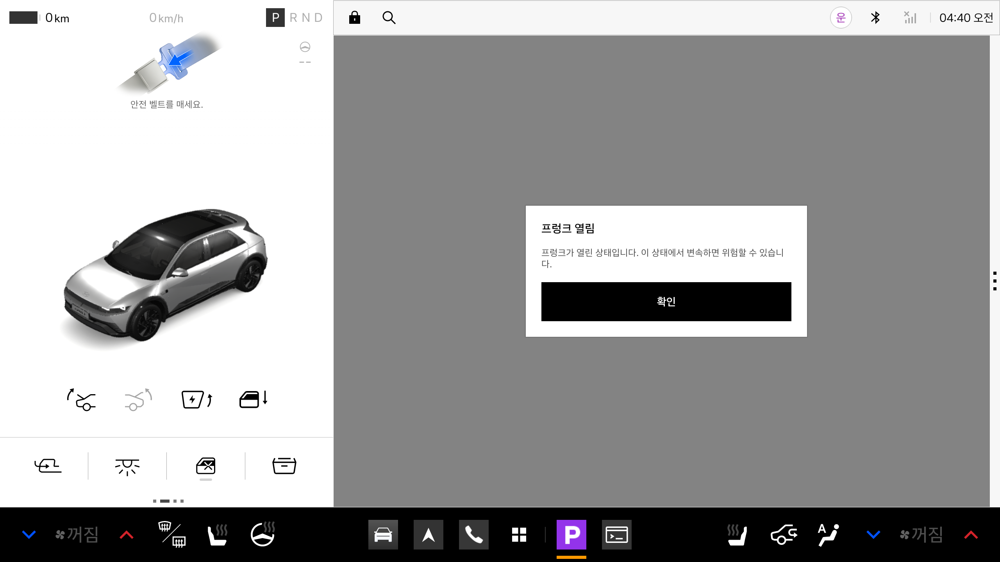

주차와 주행을 직접 전환하고,
차량 상태 변경이 화면에 반영되는 과정을 확인했다.

공식 Virtual Console의 조작부와 실제 Pleos 화면을 함께 사용했다. 기어·가속, 공조 설정, 차량 편의 장치, 에너지 상태를 변경하고 스크린샷과 Car Service 진단값을 대조했다.
| 항목 | 이번 실험의 실제 조건 |
|---|---|
| 호스트 / 에뮬레이터 | Apple Silicon Mac · Android Emulator 37.2.13 |
| 차량 이미지 / AVD | Pleos Connect 2.1.0 · Pleos_Connect_2_1_0 |
| 게스트 / 화면 / 메모리 | Android 14, API 34, arm64-v8a · 2560×1440 · RAM 4GB |
| 앱 / 차량 서비스 | dev.pleos.starter · Vehicle Service 2.3.22 |
| 앱 구현 상태 | 기본 Activity, DO 선언 없음. Vehicle SDK 의존성만 포함하며 차량 API 호출 코드는 없음. |
| 진단상 정책 범위 | android.car.drivingsafetyregion.all한국어 UI를 특정 국가의 실차 규제와 동일시하지 않음. |
조작 후 콘솔·차량 화면 또는 진단값에서 변화가 확인된 내용.
공식 문서에 명시됐으나 이번 실험에서 끝까지 실행하지 않은 내용.

아래는 에뮬레이터의 입력·상태 주입 범위다. 앱에서 같은 기능을 읽거나 제어할 수 있는지는 SDK API와 권한을 따로 확인한다. [S1, S2, S5]
| 도메인 | 콘솔 제공 항목의 예 | 이번 확인 수준 |
|---|---|---|
| Vehicle | 차량 알림 표시·숨김 | 카드 확인 |
| Motion | P/R/N/D, 브레이크, 조향각, 누적 주행거리, 핸들 열선 | 기어·가속·속도 직접 조작 |
| ADAS | 크루즈 제어 상태, 목표 속도 | 제공 항목 확인 |
| Convenience | 도어·잠금·프렁크·창문, 조명, 와이퍼, 좌석 탑승, ETCS | 도어·프렁크·창문 직접 조작 |
| Safety | 안전벨트·ABS·TPMS 등 경고등 Off / On / Blink | 카드 확인; 프렁크 경고 별도 관찰 |
| Energy | SOC, 잔여거리, 배터리 에너지·용량, 충전 한도·포트 | SOC·잔여거리 직접 조작 |
| Climate | 공조 전원, 온도, 풍량·방향, 열선·통풍, 내기순환·제상 | 전원·온도·풍량 직접 조작 |

ADAS의 “Full autonomous”는 주입 가능한 상태 값의 이름이다. 실제 자율주행 알고리즘·센서 인지·차량 제어 성능을 검증했다는 뜻은 아니다.
에뮬레이터가 실행된 상태에서 8088 포트를 전달하면 PC 브라우저로 콘솔에 접속할 수 있다. 이번 실험에서는 DDS ONLINE과 AVD 연결 상태를 확인한 뒤 조작했다. [S1, S2]
adb -s emulator-5554 forward tcp:8088 tcp:8088 # PC 브라우저에서 접속 http://127.0.0.1:8088/

DO(Distraction Optimized)는 주행 중 사용을 고려해 최적화된 앱·Activity를 뜻한다. 아래의 “DO 요구”는 앱의 선언 여부가 아니라 플랫폼이 요구하는 상태다.
| 시험 조건 | 주행 상태 진단값 | DO 요구 / 제한 | 확인한 결과 |
|---|---|---|---|
| P · 0km/h | 0 · parked | false / 0x0 | 일반 앱 정상 표시 |
| D · 0km/h | 1 · idling | true / 0x50 | UX 제한 상태 진입 |
| D · 가속 후 이동 | 2 · moving | true / 0x50 | 일반 앱 사용 불가 화면 |
| D · 다시 0km/h | 1 · idling | true / 0x50 | 사용 불가 화면 유지 |
| R / N · 0km/h | 각각 1 · idling | true / 0x50 | 진단값으로 제한 유지 확인 |
| P로 복귀 | 0 · parked | false / 0x0 | 제한 해제·일반 앱 복원 |


P: Current Driving State: 0
Display id: 0 UXR: DO: false UxR: 0
D: Current Driving State: 1 또는 2
Display id: 0 UXR: DO: true UxR: 80
십진수 80은 0x50이다. 설치된 Android API 34의 공개 상수와 대조하면 NO_VIDEO(16) | NO_SETUP(64)에 해당한다. 앱 전체의 DO 적합성 판단과 앱 내부 기능별 제한은 별도로 처리해야 한다. [S3, S4]
all이다. 배포 대상에서는 지역·차량·플랫폼별 상태와 실제 CarUxRestrictions 값을 다시 확인해야 한다.
| 구현 아이디어 | 이번 환경에서 시험할 수 있는 것 |
|---|---|
| 전기차 상태 대시보드 | SOC·잔여거리 변화에 따른 카드, 경고, 추천 조건의 표시 |
| 출발 전 실내 환경 점검 | 공조 전원·목표 온도·풍량 상태에 따른 안내 UI |
| 충전·휴식 안내 | 주입한 에너지 상태를 입력으로 하는 조건 분기와 메시지 |


창문 50%는 콘솔의 상태 반영을 확인했다. 유리 위치의 정확한 3D 애니메이션 비율까지 계측한 것은 아니다. 차량 기본 경고 UI를 우리 앱이 임의로 대체할 수 있다는 뜻도 아니다.
| 기능 후보 | 개발 접근 | 확인해야 할 조건 |
|---|---|---|
| 차량 상태 요약 | Vehicle SDK로 상태 조회·변경 구독 | 기능별 capability, 읽기 권한, 미지원·실패 처리 |
| 출발 전 점검 | 주차 상태에서 도어·창문·에너지 상태를 모아 안내 | 읽을 수 있는 실제 API, 상태 신선도, 주행 전환 시 UI 축소 |
| 운행 상황별 추천 | 기어·주행 상태·에너지 조건으로 안내 선택 | 주행 중 허용 UI와 실제 restriction 값 |
| 내비 연계 안내 | NaviHelper 연동 후보 | 내비 탑재 구성과 제공 API; 이번 실험에서는 미검증 |
| 공조·도어 자동 제어 | Vehicle 제어 API 후보 | WRITE 지원, CONTROL 권한, 제공·승인 범위부터 확인 |
| 음성·AI 앱 동작 | Gleo App Schema → Action → Callback [S8] | 연동 절차와 사용 가능 환경; 음성 호출은 미검증 |
조회한 프로젝트 생성·SDK 신청 가이드는 Vehicle State와 NaviHelper를 신청 없이 사용 가능으로 안내한다. 반면 Vehicle Control, FusedLocation, TextToSpeech, SpeechToText는 “준비 중”으로 설명한다. 문서에 API가 존재하거나 에뮬레이터에 서비스가 설치돼 있어도, 우리 프로젝트에서 사용할 수 있다고 단정하면 안 된다. [S6]
CarUxRestrictionsManager를 통해 현재값과 변경 이벤트를 받는다. [S3]ActiveRestrictions에 맞춰 영상·설정 등 개별 기능을 제한해야 한다. [S3, S4]Pleos_Connect_2_1_0 AVD를 실행하고 ADB 연결을 확인한다.DDS ONLINE을 확인한다.adb devices adb -s emulator-5554 forward tcp:8088 tcp:8088 adb -s emulator-5554 shell am start -W \ -n dev.pleos.starter/.MainActivity adb -s emulator-5554 shell dumpsys car_service
| 항목 | 관찰과 문서화한 범위 |
|---|---|
| 런타임 안정성 | host 렌더러와 SwiftShader 실행에서 각각 비정상 종료를 관찰했다. 이후 host + Vulkan 비활성화 + 카메라 제외 조건으로 나머지 캡처를 진행했다. 장시간 안정성이 입증된 것은 아니다. |
| 그래픽 | SwiftShader에서는 일부 차량 3D 표시가 비어 있었다. 후반 캡처는 host 조건에서 3D 차량을 확인했다. 브라우저 Highway는 WebGL 2 오류, Forest는 정상 표시였다. |
| ADB 문서와 이미지 차이 | hmg_car_service는 이 이미지에 없었다. cmd car_service help는 non-user build 요구 오류가 났다. 권한을 우회하지 않고 공식 콘솔과 허용된 진단만 사용했다. [S9] |
사진은 이 보고서를 위해 실제 에뮬레이터와 로컬 Virtual Console에서 직접 캡처했다. 합성 화면을 사용하지 않았다. 사진의 기기 시각은 호스트 시각과 다를 수 있으며, 날짜는 호스트의 실험일을 기준으로 했다.
https://document.pleos.ai/docs/pleos-only/app-test-guide/virtual-console-guidehttps://document.pleos.ai/docs/connect/guide/getting-started/application-development/use-vehicle-emulatorhttps://document.pleos.ai/docs/pleos-only/vehicle-app-developer-guide/driving-restriction-development-guidehttps://document.pleos.ai/docs/pleos-only/vehicle-app-planning-guide/driving-restiction-policyhttps://document.pleos.ai/docs/pleos-only/connect-sdk-pleos/
https://document.pleos.ai/docs/pleos-only/connect-sdk-pleos/Vehicle/check-capability
https://document.pleos.ai/docs/pleos-only/connect-sdk-pleos/Vehicle/vehicle-permissionhttps://document.pleos.ai/docs/pleos-only/create-my-projecthttps://document.pleos.ai/docs/pleos-only/vehicle-app-planning-guide/api-compatibility-availabilityhttps://document.pleos.ai/docs/pleos-only/app-integration-guide/guide/core-conceptshttps://document.pleos.ai/docs/pleos-only/vehicle-app-developer-guide/adb-command-reference-guide최종 PDF와 함께 같은 디렉터리의 guide.html 및 assets/에 원본 캡처가 있다. 주요 비교는 04-driving-starter, 06-driving-relaunch, 12-energy-native, 14-door-open-native, 22-parked-ready 이미지다.